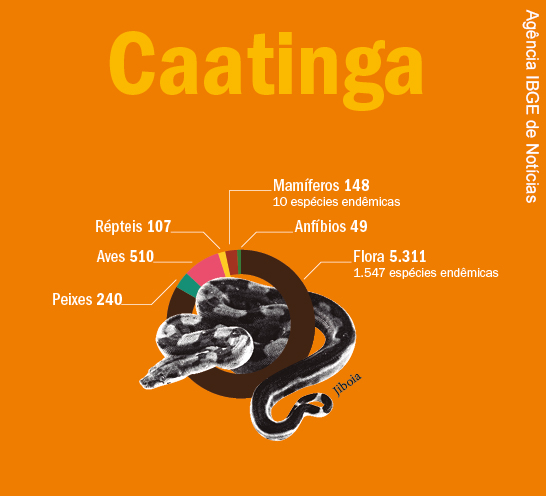
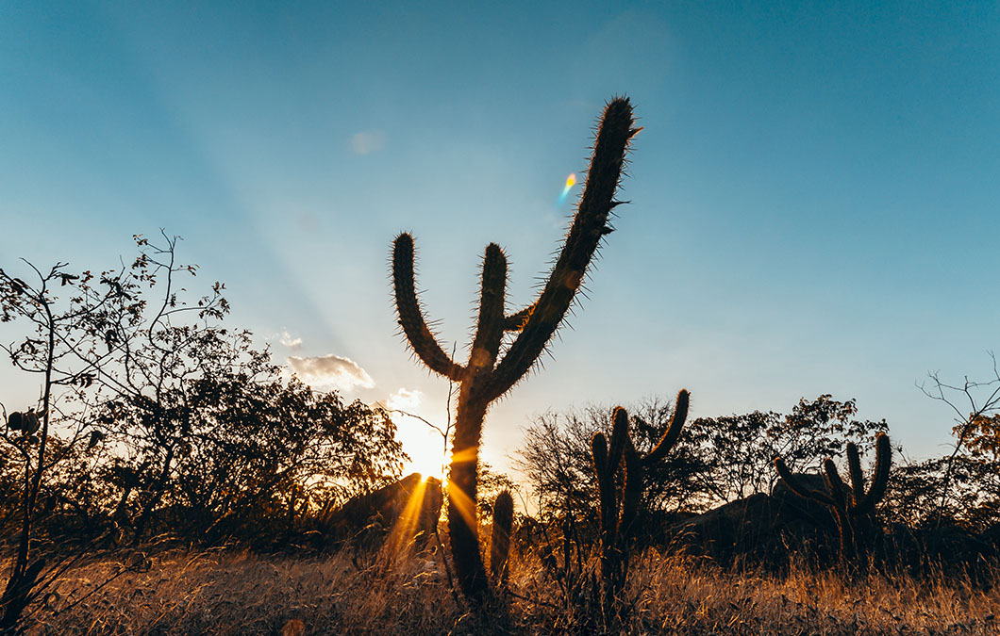

FAUNA & DESERTIFICAÇÃO
A fauna da Caatinga é bastante diversificada, mas não tão conhecida, havendo diversas espécies de animais endêmicos. Os animais que se encontram na região abrangida por esse bioma apresentam características de adaptação ao clima, assim como as plantas, como o desenvolvimento de hábitos noturnos, comportamentos migratórios e “hibernações” (capacidade de algumas espécies de lidar com condições climáticas hostis).
Segundo o Ministério do Meio Ambiente, a Caatinga apresenta:
- 178 espécies de mamíferos;
- 591 espécies de aves;
- 117 espécies de répteis;
- 79 espécies de anfíbios;
- 241 espécies de peixes;
- 221 espécies de abelhas.

Dos animais encontrados nesse bioma, destacam-se:
- ararinha-azul;
- sapo-cururu;
- onça-parda;
- macaco-prego;
- asa-branca;
- cotia;
- tatu-bola;
- sagui-do-nordeste;
- preá;
- tatu-peba;
- veado-catingueiro;
- sagui-do-nordeste;
- guigó-da-caatinga;
- jacaré-de-papo-amarelo.
A desertificação é um dos processos mais graves de degradação da terra. Ela ocorre exclusivamente nas regiões áridas, semiáridas e subúmidas secas do planeta, conforme a definição das Nações Unidas (ONU). A rigor, a degradação observada em outras regiões, mais úmidas, não é desertificação. A desertificação pode ser despertada por vários fatores, especialmente os eventos climáticos e a ação humana. Pode ser consequência da elevação das temperaturas. Mas também acentua seus efeitos, num ciclo vicioso.
No Brasil, a desertificação é um fator que vem gerando graves problemas ambientais e sociais. O país detém atualmente, uma área de mais de 180 mil quilômetros quadrados afetados por esse fenômeno. No Nordeste, o problema já atinge mais da metade de suas terras (55,25%). As regiões de Cabrobó em Pernambuco, Gilbués no Piauí, Seridró, no Rio Grande do Norte, e Irauçuba, no Ceará, formam os maiores núcleos de desertificação. Só nessas regiões, de clima semiárido onde a caatinga predomina, as atividades que utilizam queimadas e extração de madeira têm produzido a degradação de mais de 18 mil quilômetros quadrados.
De acordo com o pesquisador Everaldo Sampaio, da Universidade Federal de Pernambuco (UFPE), a caatinga fixa aproximadamente 35 toneladas de carbono por hectare em um período de 20 anos. Já para o biólogo José Maria Cardoso, membro da ONG Conservação Internacional do Brasil, este bioma possui de 50 a 100 toneladas de biomassa por hectare que pode absorver de 20 a 50 toneladas de carbono. Estima-se ainda que em um hectare de plantio de umbuzeiro, baraúna, jurema e de outros arbóreos típicos da caatinga, pode absorver algo em torno de 10 toneladas de carbono. A caatinga, portanto, dispõe de potencial para o mercado de carbono
Muitas organizações sociais que incentivam a prática da produção sustentável na caatinga estão desenvolvendo ações que visam a preservação do bioma. Em parceria com organismos do governo, essas organizações implantam projetos onde o manejo da terra evitam ações como queimadas e desmatamento. Atividades agropastoris e de extrativismo também são incentivadas na perspectiva da preservação ambiental.
O Irpaa tem levado a proposta de preservar o bioma caatinga a sete comunidades rurais do sertão baiano através do Projeto Recaatingamento, que tem o patrocínio da Petrobras e conta com a parceria de órgãos como Embrapa, Univasf e UNEB, além das organizações de Fundo de Pasto. O Projeto desenvolve um conjunto de ações voltadas para a preservação e proteção da caatinga e tem como maior destaque o plantio de espécies nativas nas áreas a serem recuperadas e as praticas para promover a sucessão natural da caatinga. Atividades educativas e agregação de valor aos produtos da agropecuária do extrativismo das famílias envolvidas também fortalecem a ação mobilizadora e formadora presente na execução do projeto.
 UM POUCO SOBRE A CAATINGA
UM POUCO SOBRE A CAATINGA
Caatinga é o único bioma exclusivamente brasileiro. É marcada pela ocorrência do clima Semiárido, quente e seco, e também por espécies endêmicas altamente adaptadas à seca.
 DESAFIOS
DESAFIOS
Caatinga, único bioma exclusivamente brasileiro, enfrenta uma série de ameaças que comprometem sua biodiversidade e a qualidade de vida das cerca de 30 milhões de pesso...
 CURIOSIDADES
CURIOSIDADES
Caatinga é o único bioma exclusivamente brasileiro. É marcada pela ocorrência do clima Semiárido, quente e seco, e também por espécies endêmicas altamente adaptadas à seca.